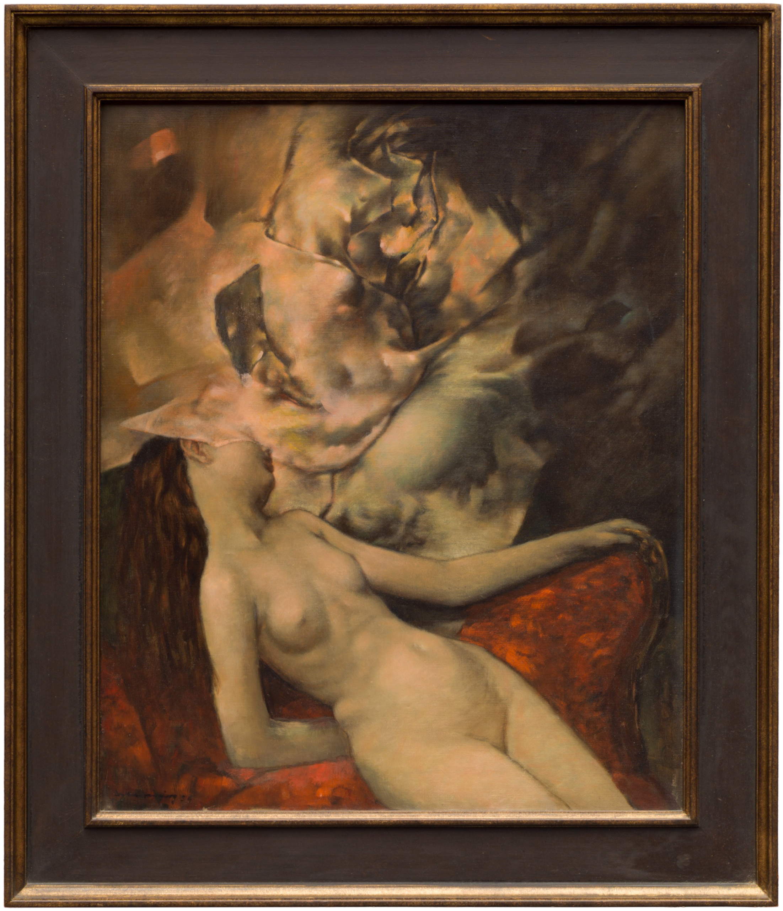

Lágrimas de Eros · Obra 108 de 121
Desnudo dormido (Nue endormie)
Dorothea Tanning (1954)

Una mujer desnuda recostada en un sofá rojo, con la cabeza perdida entre pliegues de tela o de luz. Bataille lo titula «Mujer dormida» y lo fecha en 1953. La fundación de la artista lo cataloga como «Nue endormie», de 1954, en el Museum of Contemporary Art de Chicago.
Lo que hace que destaque
Una mujer desnuda recostada en un sofá rojo, con la cabeza perdida entre pliegues de tela o de luz. Bataille lo titula «Mujer dormida» y lo fecha en 1953. La fundación de la artista lo cataloga como «Nue endormie», de 1954, en el Museum of Contemporary Art de Chicago.
Contexto histórico
Identificada comparando la lámina con la imagen de la fundación. Los centímetros son conversión propia. La imagen principal es la del propio museo, con el marco.
Autoría y procedencia
Dorothea Tanning (1910-2012), pintora, escultora y escritora estadounidense, destacada representante del surrealismo internacional vinculada a Max Ernst.
En los libros
Las lágrimas de Eros, de Georges Bataille · Lámina de la p. 189
Ficha pendiente de contrastar con fuentes académicas.